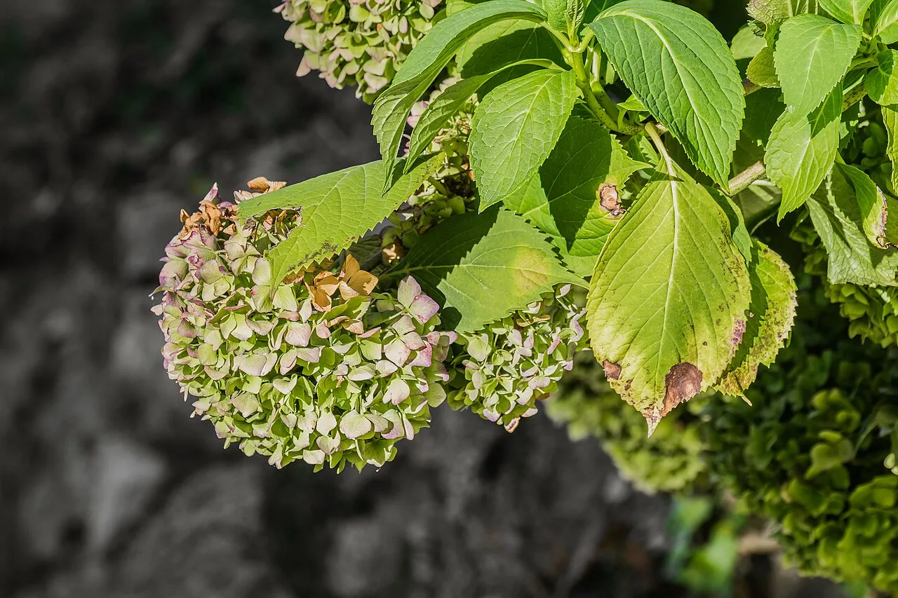
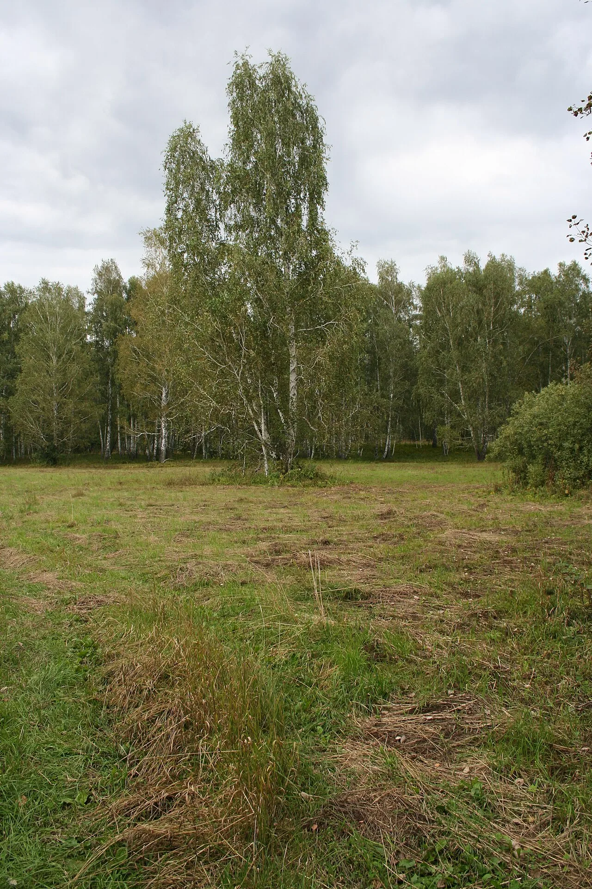
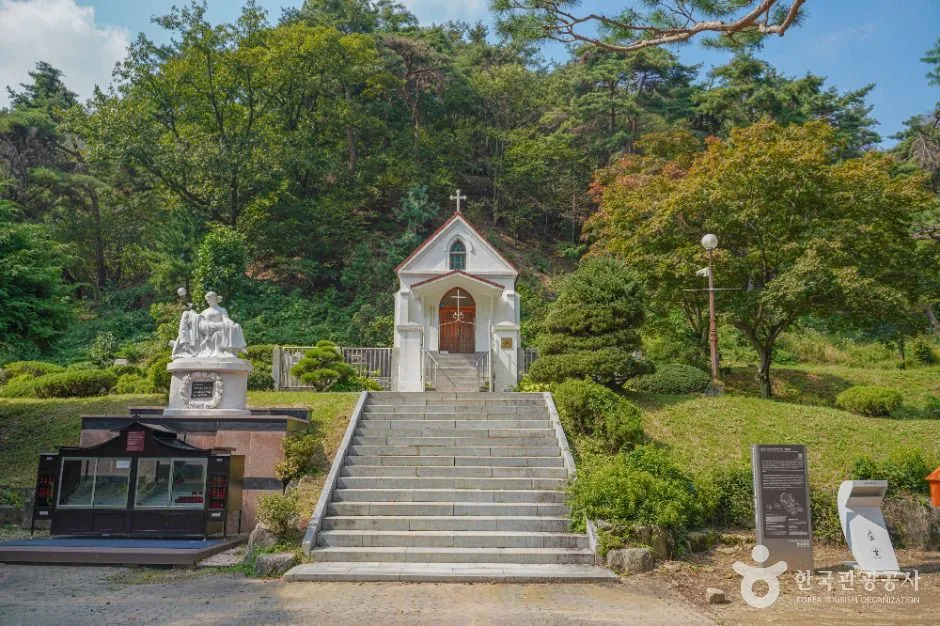

▲ 나무수국(하이드란지아 파니쿨라타) 꽃송이. 안성 죽산면 용설리의 '용설, 구월의 유럽수국'도 이런 유럽 품종 나무수국을 대량으로 심어 조성했다 (참고사진)
수국은 6~7월에 피었다가 장마와 함께 지는 여름꽃으로 알려져 있다. 그런데 경기 안성시 죽산면 용설리 한 언덕에는 이 상식을 깨는 정원이 있다. '용설, 구월의 유럽수국'이다. 개인이 9만5천 평 부지에 유럽 품종 나무수국을 심어 가꾼 이 정원은 9월에도, 10월 중순까지도 여전히 만개한 수국을 볼 수 있어 입소문을 타고 있다. 왜 이곳 수국은 이렇게 오래 피어 있는 걸까. 개화 비결부터 가는 법, 입장료, 안성 연계 여행 코스까지 방문 전 확인할 정보를 정리했다.
1. "여름꽃"이 가을까지? — 용설, 구월의 유럽수국이란
경기 안성시 죽산면 용설리에 자리한 이 정원은 원래 관광지로 조성된 곳이 아니다. 개인이 소유한 야산과 밭에 유럽 품종 수국을 하나둘 심기 시작한 것이 지금의 규모로 커졌고, 2023년부터 시즌마다 일반에 무료 개방하고 있다. 부지 규모는 약 9만5천 평(약 31만㎡)으로, 언덕 전체에 수국이 군락을 이루고 그 사이로 자작나무숲과 메타세쿼이아 산책로가 나 있다. 이름 그대로 '9월(구월)에도 유럽수국을 볼 수 있다'는 점을 내세운 곳으로, 매년 가을 개방 시기가 되면 사진 애호가와 가족 단위 방문객의 발걸음이 이어진다. 2026년에도 9월 초부터 무료 개방을 시작한 것으로 확인됐다. 2024년에는 9월 28일부터 10월 27일까지, 2025년에는 10월 19일까지 개방된 전례가 있어 올해도 10월 중순~하순까지 이어질 가능성이 높지만, 정확한 종료 시점은 개화 상황에 따라 매년 달라지므로 방문 직전 공식 채널 확인이 필요하다.
2. 왜 서리 내릴 때까지 피어 있나 — 나무수국의 개화 비밀
수국이라고 다 같은 수국이 아니다. 흔히 알려진 '수국(Hydrangea macrophylla)'은 초여름에 피었다가 장마 무렵 시들지만, 이 정원이 주력으로 심은 나무수국(Hydrangea paniculata) 계열 유럽 품종은 사정이 다르다. 나무수국은 7~8월경 원추형 꽃차례로 개화를 시작하는데, 다른 수국처럼 꽃이 지고 새로 피는 게 아니라 한 번 핀 꽃이 가지 끝에 그대로 달린 채 색깔만 서서히 바뀌며 늦가을까지 유지되는 특성이 있다. 대표 품종인 '라임라이트'의 경우 개화 시기가 7월부터 10월까지로 길며, 처음엔 연둣빛으로 피었다가 흰색을 거쳐 가을에는 연분홍으로 물든다. 낮이 짧아질수록 흰색에서 분홍, 짙게는 붉은빛까지 번지는 이 색 변화 자체가 늦가을 정원의 볼거리가 되는 셈이다.

▲ 가을이 되며 초록빛에서 분홍빛, 갈색으로 서서히 물들어가는 나무수국 꽃송이. 이렇게 핀 꽃이 지지 않고 색만 바뀌며 오래 유지되는 것이 늦가을까지 볼거리가 이어지는 비결이다 ⓒ Wikimedia Commons(참고사진)
즉 용설리 정원의 수국이 신비한 게 아니라, 애초에 개화 기간이 길고 색이 오래 유지되는 유럽 품종을 골라 대규모로 식재한 것이 늦가을까지 볼거리를 지속시키는 핵심 비결이다. 여기에 국내 대부분 지역에서 겨울 추위와 여름 가뭄에도 잘 견디는 나무수국의 강한 생명력이 더해져, 서리가 내리기 직전까지 꽃송이가 형태를 유지한다.
3. 포토스팟 — 수국밭과 자작나무숲
정원의 핵심은 언덕을 뒤덮은 수국밭이지만, 함께 조성된 자작나무숲과 메타세쿼이아 산책로도 놓치기 아까운 포토스팟이다. 하얀 줄기의 자작나무들이 늘어선 숲과 그 사이로 난 산책길은 수국밭과는 또 다른 분위기를 내 방문객들이 즐겨 찾는 코스로 꼽힌다. 축제 기간에는 포토존이 별도로 설치되기도 하며, 비축제 기간에도 산책로 자체는 개방돼 걷기 좋다는 후기가 많다. 다만 이곳은 상업적으로 정비된 관광단지가 아니라 개인이 가꾼 정원인 만큼, 화장실이나 편의점 같은 편의시설은 갖춰져 있지 않다는 점을 감안해야 한다.

▲ 자작나무숲 전경. 용설 수국정원에도 이런 흰 줄기의 자작나무숲이 산책로와 함께 조성돼 있다 ⓒ Wikimedia Commons(참고사진)
4. 가는 법·주차·입장료·주의사항
정원은 무료 개방되며, 별도 예약 없이 현장에서 방문하면 된다. 운영시간은 오전 10시부터 오후 5시까지이며, 개방 기간 중에는 연중무휴로 운영된다. 주차장은 농장 입구 쪽에 마련돼 있어 자가용 방문에 큰 어려움은 없다. 다만 농장으로 들어가는 진입로 일부가 좁은 흙길이어서, 비가 오는 날에는 이동이 다소 불편할 수 있고 운전이 서툰 경우 주의가 필요하다는 방문 후기가 많다.
안성시청 축제포털에서 최신 개방 일정 확인 가능| 항목 | 내용 |
|---|---|
| 위치 | 경기도 안성시 죽산면 용설리 일대 |
| 개방 기간 | 2026년 9월 초 개방 시작(지난해 사례상 10월 중순~하순 종료 예상, 개화 상황에 따라 변동 가능) |
| 운영시간 | 10:00 ~ 17:00, 개방 기간 중 연중무휴 |
| 입장료 | 무료(사전 예약 불가, 현장 접수만 가능) |
| 주차 | 농장 입구 주차장 이용, 무료 |
| 편의시설 | 화장실·편의점 없음, 유모차 대여 불가, 반려동물 동반 가능 |
| 주의사항 | 진입로 일부 좁은 흙길, 우천 시 이동 불편, 쓰레기 되가져가기 |
대중교통보다는 자가용 방문이 사실상 유일한 방법에 가깝다. 내비게이션에 '안성시 죽산면 용설리' 또는 정원 이름을 입력해 진입로 안내를 따라가되, 마지막 구간의 좁은 흙길에서는 서행이 필요하다. 편의시설이 없는 만큼 물이나 간단한 간식을 미리 챙기고, 화장실은 인근 죽산면 소재지에서 미리 들르는 편이 좋다.
방문 상세 후기·편의시설 정보 확인 가능5. 안성 연계 여행 코스 — 안성팜랜드·미리내성지·고삼저수지

▲ 안성팜랜드의 가을 핑크뮬리·코스모스 화원. 용설 수국정원과 함께 하루 코스로 묶기 좋다 ⓒ 농협안성팜랜드
용설리 수국정원만 보고 돌아가기엔 안성은 가을에 볼거리가 많은 지역이다. 동물 체험과 계절 꽃 정원을 함께 갖춘 안성팜랜드는 9월 중순부터 10월 말까지 핑크뮬리와 코스모스가 만발해 대표적인 가을 나들이 코스로 꼽힌다. 조금 더 조용한 일정을 원한다면 소나무 숲에 둘러싸인 성당인 미리내성지를 함께 묶어도 좋다. 김대건 신부의 유해가 모셔진 곳으로, 산책하듯 둘러보기 좋은 조용한 분위기가 특징이다.

▲ 안성 미리내성지. 소나무 숲에 둘러싸인 조용한 분위기로, 수국정원과 함께 묶어 여유롭게 둘러보기 좋다 ⓒ 한국관광공사
드라이브 코스를 더하고 싶다면 물빛과 단풍이 함께 어우러지는 고삼저수지도 추천할 만하다. 세 곳 모두 죽산면 용설리에서 승용차로 이동 가능한 거리에 있어, 오전에는 수국정원에서 사진을 남기고 오후에는 안성팜랜드나 미리내성지로 이동하는 식으로 하루 일정을 짤 수 있다. 다만 용설리 정원 자체는 편의시설이 없는 만큼, 식사나 화장실은 이동 중 들르는 다른 명소에서 해결하는 편이 동선상 효율적이다.

▲ 안성 고삼저수지 항공뷰. 가을 단풍과 함께 드라이브 코스로 즐기기 좋다 ⓒ 안성시청
✅ 안성 용설 구월의 유럽수국, 가기 전 체크리스트
· 위치는 경기 안성시 죽산면 용설리 일대, 개인이 조성해 2023년부터 무료 개방
· 부지 규모 약 9만5천 평, 유럽 품종 나무수국(하이드란지아 파니쿨라타)이 주력 식재종
· 늦가을까지 피어 있는 이유는 나무수국이 핀 꽃을 유지한 채 색만 서서히 바꾸는 특성 때문(라임라이트 등 품종은 7~10월 개화)
· 2026년 개방은 9월 초 시작, 지난해 사례상 10월 중순~하순 종료 예상(운영시간 10:00~17:00)
· 입장료 무료, 예약 불가·현장 접수만, 주차 무료
· 화장실·편의점 없음, 유모차 대여 불가, 진입로 좁은 흙길 주의
· 안성팜랜드·미리내성지·고삼저수지와 묶어 하루 코스로 즐기기 좋음
· 개방 상태는 개화 상황에 따라 유동적이므로 방문 전 공식 채널 재확인 필요